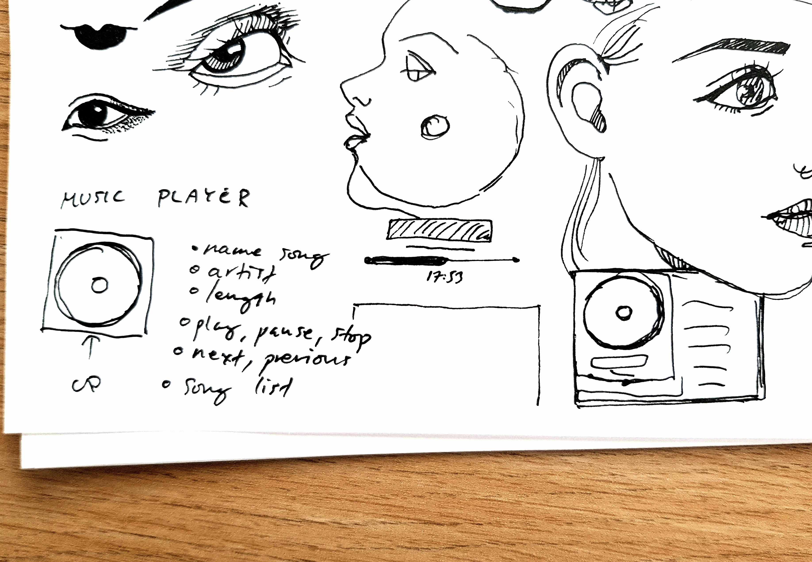
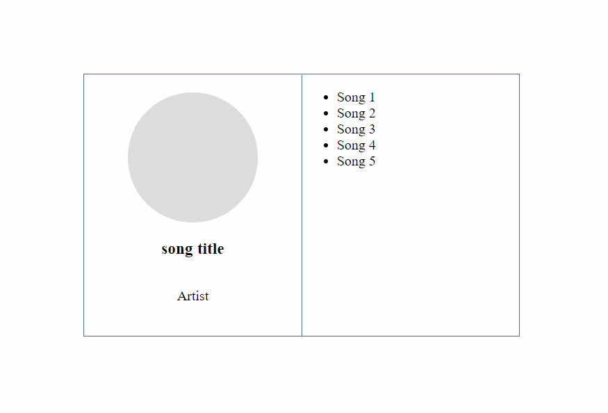
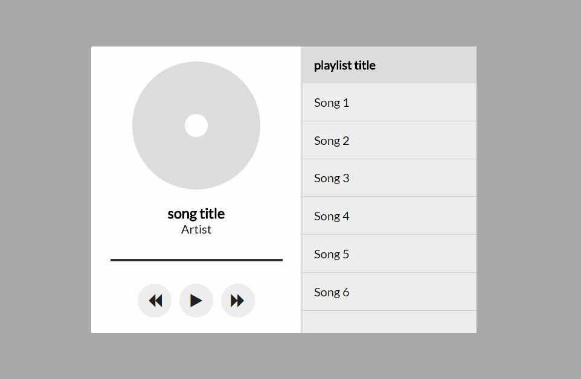
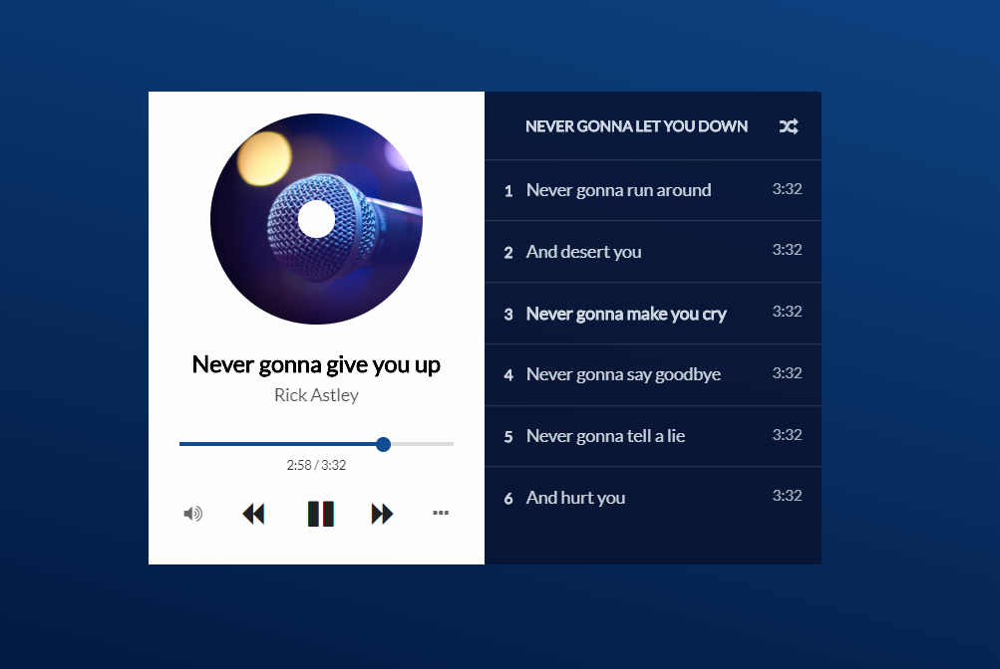

Prototyping in the browser
Step 0: Sketching on paper
Before we jump into coding, the fastest way to try out different ideas is to sketch with good ol' pen & paper. Think about what elements are the most important for your prototype and try out some different variations. And since I don't follow my own advice, I just made one quick sketch on some scrap paper filled with crappy doodles. We're busy people after all.
Step 1: Basic markup
Now it's time to open up your favorite text editor to layout the basic html of the prototype. Since we're still in a hurry, let's not get fancy with different frameworks and good structure. I just create one html file and put everything in there (yes, style and script tags for css and javascript). Think quick and dirty. If it looks completely messed up in IE that means you've succeeded.
Step 2: Grayscale and proportions
When the basic structure is in place, we can start to work on the overall proportions and contrast of the prototype. I find the most effective way is to work in grayscale. Remember the most important elements from your sketch? Make them stand out and create a hierarchy that feels good.
Step 3: Color and details
Somewhere along the way you can start to add in color and details. This step takes the most time, because you'll never actually finish it. There just comes a time when you get tired of tweaking the padding, colors and font-sizes so the only solution is to give up. And now we're done!
